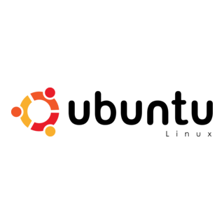
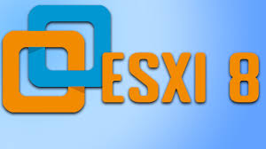
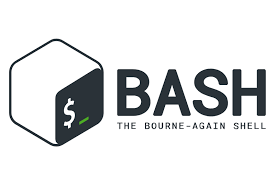
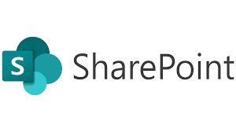

About Me
I’m a systems administrator with 4+ years of experience managing Linux and Windows environments. I specialize in troubleshooting, documentation, and support, with a growing passion for cybersecurity and automation.
Tech Stack
| OS |  | |||||
| Virtualisation |  | |||||
| Tools |  |
 | ||||
| Other |  |  |
 |
Skills
- 🖥️ Server administration: Linux (Debian, Ubuntu) and Windows Servers (2008, 2012, 2022)
- 🔐 Monitoring: Zabbix alerts configuration & dashboards
- 📜 Scripting: Bash automation
- 🧠 Support: 1st & 2nd line troubleshooting
- 📝 Docs: Clear, concise technical documentation
- 🔐 Security Management: Firewall rules configuration using UFW and intrusion prevention with Fail2ban
- 💾 Backup Validation: Test & restore for data reliability
- 🌐 DNS Configuration: Add, update, remove records
- 📝 Domain Lifecycle: Domain registration, renewals, and transfers
- 🤝 Client Engagement: Pre-sales responses & quote generation
Projects
- ✅ Migration of VM's from Linode to Vmware
- ✅ Built internal knowledge base for support team
Certifications
- Google Cybersecurity Professional Certificate V2 (June 2025)
- Certificate in Suse Linux Enterprise Server as Mail Server (June 2004)
- Certificate in Suse Linux Enterprise Server Infrastructure Services in the Network (June 2004)
- Certificate in Suse Linux Enterprise Server as Mail Server (June 2004)
- National Diploma in Information Technology (Dec 2001)
- Diploma in Advanced Secretarial and Computer Skills (February 1998)